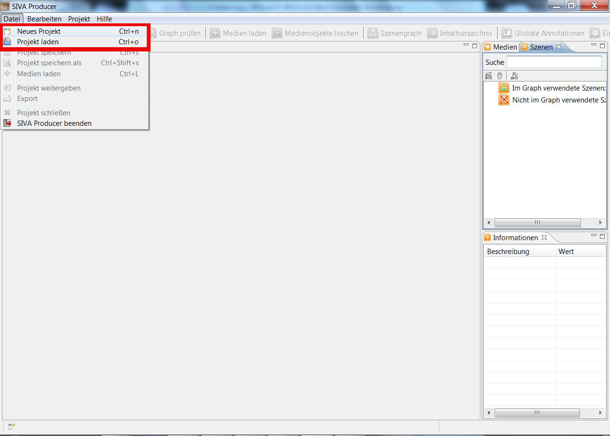
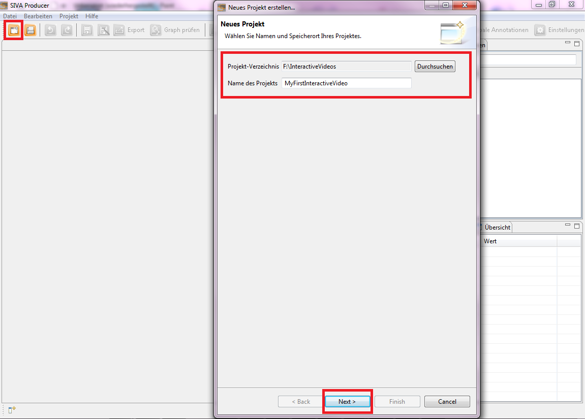
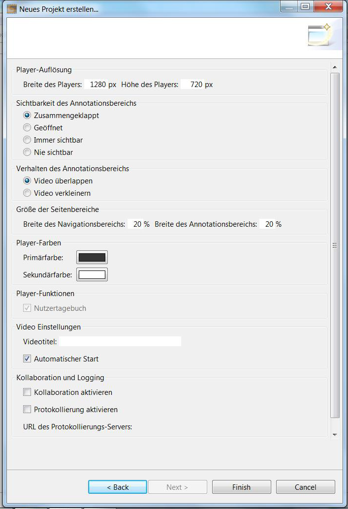
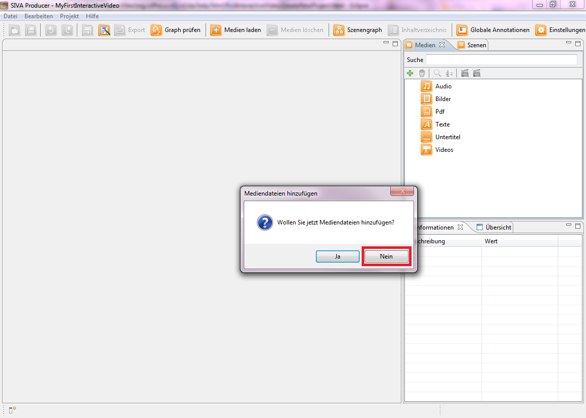
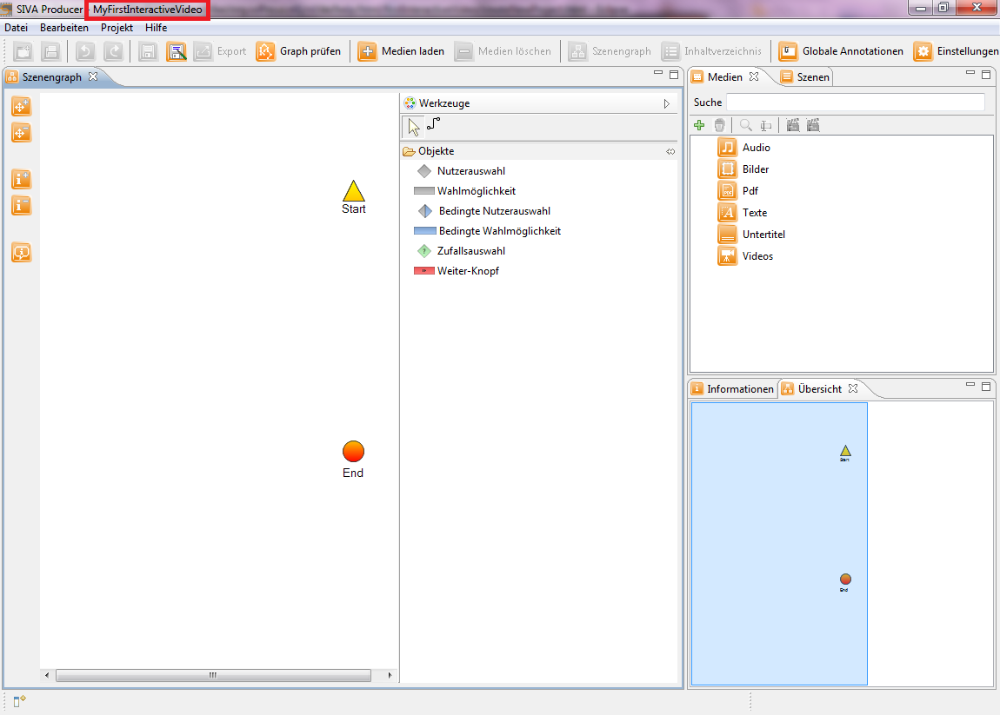

If you want to open an already existing project, you have to click on "File" and choose "Open Project".
To create a new video project you have to click on "File" and choose "New Project".

A second option to create a new project is just to click on the button "Create a new project" in the toolbar. After that a
window for creating a new project opens. First you have to choose a memory location by clicking on the "Search"-button and
navigating to the target directory. After that, you set a project name and click on the "Next"-button to come to the next dialog
(choice of the start mode).

Now a dialog window opens, where you can define the design of the player. Several options are available.
For example, you can choose whether the annotation bar should be visible or not, alter the size of the side bars or determine how the colors of the player should look like.

By clicking the "Finish"-button a pop up window appears where you will be asked if you want to add media files now.
Please choose the "No"-button now, because in this tutorial you will learn how to add media manually.

After that, the window is closed and you have added a new project with the specified name under the specified memory location successfully.
The first step is done and you are now in the project dialog which should look like this:

In the next step you will learn how to load a medium. Therefor, please click on the next menu item "Adding media files" in the help index on the left side or on the following link: Adding media files